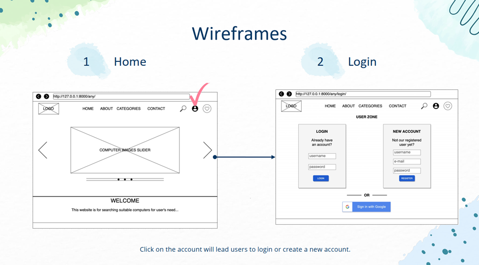

Wireframe
Un website wireframe, también conocido como un esquema de página o plano de pantalla, es una guía visual que representa el esqueleto o estructura visual de un sitio web. El wireframe esquematiza el diseño de página u ordenamiento del contenido del sitio web, incluyendo elementos de la interfaz y sistemas de navegación, y cómo funcionan en conjunto.
